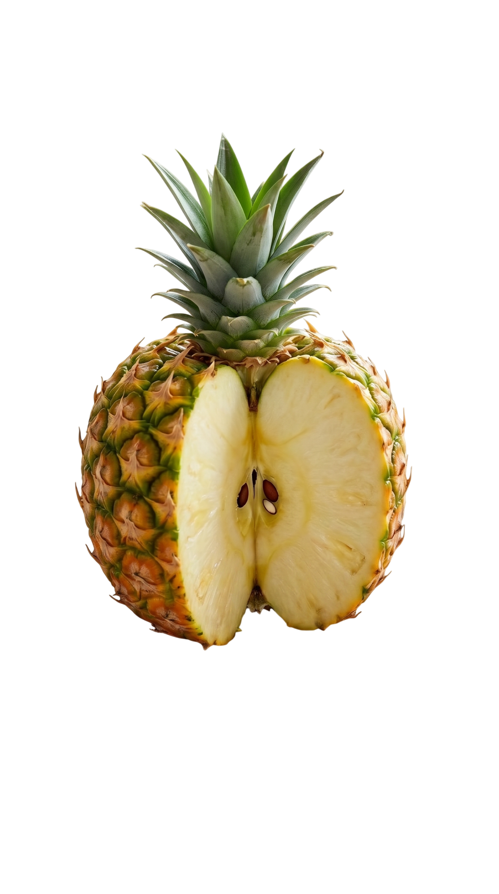
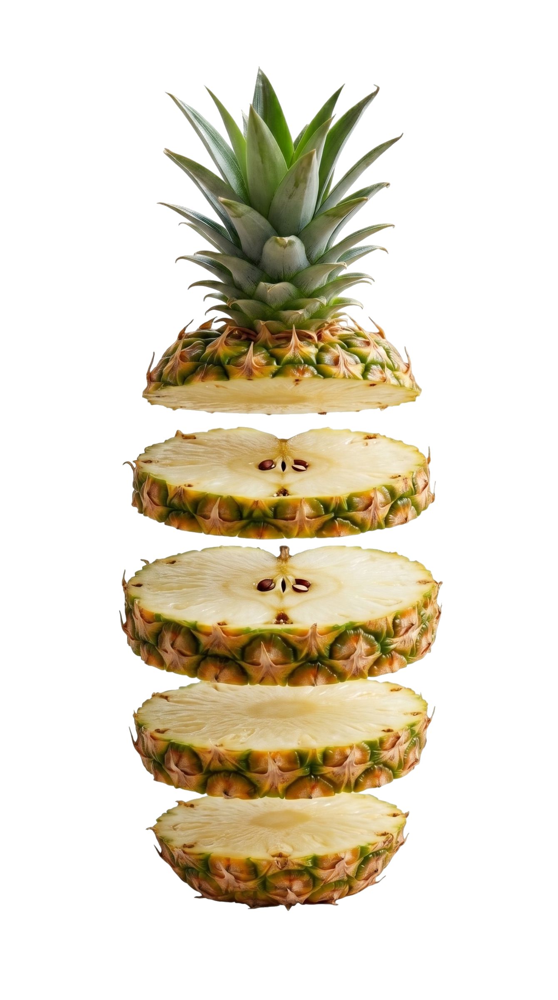
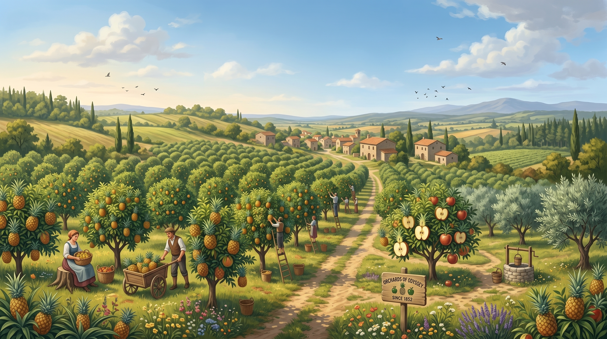
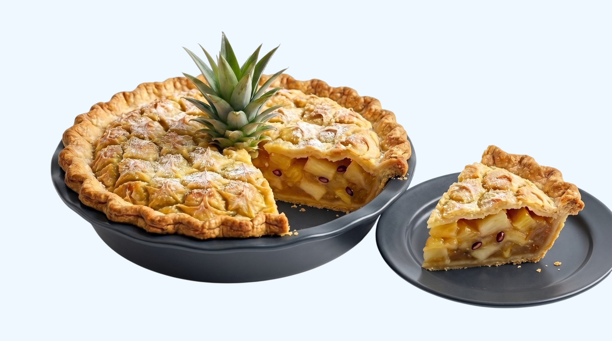

дней раскрывается аромат после сбора
№14 Каталог садов Одиссеи
Ананасовое яблоко
Солнечная кислинка ананаса, плотный яблочный хруст и кожура, похожая на маленькую броню тропического сада.
- Сорт
- Golden Orchard
- Класс
- Ananas × Malus
- Сезон
- Позднее лето


слоя вкуса: мёд, яблоко и терпкая хвоя
год первой легенды о гибридном саде
Портрет вкуса
Хрустит как яблоко,
пахнет как полдень
Первый надкус
Сочная мякоть даёт яблочную плотность, но оставляет тёплый ананасовый шлейф без приторности.
Середина
Вкус становится глубже: медовая кислота, немного зелёной травы и лёгкая пряность у кожуры.
Послевкусие
Остаётся свежесть, похожая на прохладный сок после долгой прогулки по садовой тропе.
Место происхождения
Сад, где тропики встретились с яблонями
Полянка не выглядит лабораторией. Здесь ряды ананасовых крон соседствуют с яблонями, а сборщики выбирают плоды не по размеру, а по звуку: спелый плод отвечает сухим, чистым щелчком.
51°02′ с.ш. · Сады Одиссеи · сбор вручную

Лаборатория вкуса
Три превращения одного плода
Один и тот же гибрид становится холодным напитком, тёплым десертом и фруктовым льдом. Наведите на название внизу — и витрина сменится.

Десерт дня
Tarte Solar
Слоёное тесто, карамелизованные дольки и тёплая корица. Запекается до золотой корки, а ананасовая кислота не даёт начинке стать приторной.
Как подать
Три спокойных сценария
07:30 · Завтрак
Утро
Тонкие кружки, холодный йогурт, поджаренный овёс и немного лимонной цедры.
13:00 · Обед
Полдень
Крупные дольки, твёрдый сыр, зелёный базилик и сухой сидр.
21:00 · Ужин
Вечер
Быстрая карамелизация на сковороде, сливочное масло и щепоть крупной соли.